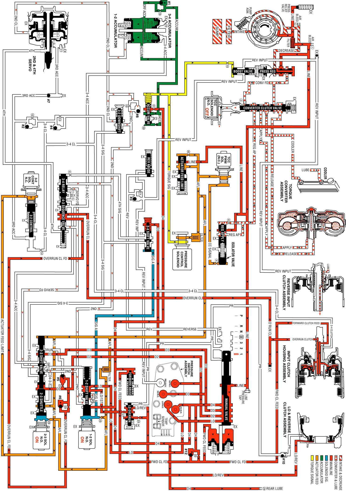

Manual First Gear
Manual First Gear
A manual 2-1 downshift can be accomplished by moving the gear selector lever into the manual first (1) position when the transmission is operating in second gear. The downshift to first gear is controlled electronically by the PCM. The PCM will not energize the 1-2 shift solenoid valve to initiate the downshift until the vehicle speed is below approximately 48 to 56 km/h (30 to 35 mph). Above this speed, the transmission operates in a manual first-second gear state. The following text explains the manual 2-1 downshift.
Manual Valve
The selector lever moves the manual shaft and the manual valve into the manual first (1) position. This allows the line pressure to enter the Lo fluid circuit.
Transmission Fluid Pressure (TFP) Manual Valve Position Switch Assembly
Lo fluid is routed to the TFP manual valve position switch where it closes the normally open lo pressure switch. The addition of the lo pressure switch being closed signals to the PCM that manual first is selected.
2-3 Shift Solenoid (SS) Valve
In both first and second gears, this solenoid is energized and maintains the signal B fluid pressure at the solenoid end of the 2-3 shift valve train.
2-3 Shift Valve Train
Held in the downshift position by the signal B fluid pressure from the solenoid, the valve train blocks the AFL fluid from entering the D432 fluid circuit. The D432 fluid circuit is open to exhaust past the valve.
1-2 Shift Solenoid (SS) Valve
Below approximately 48 to 56 km/h (30 to 35 mph) the PCM energizes the normally open solenoid. This blocks the signal A fluid pressure from exhausting through the solenoid and creates the pressure in the signal A fluid circuit. Above this speed, the PCM keeps the solenoid de-energized and the transmission operates in manual first-second gear.
1-2 Shift Valve
Signal A fluid pressure moves the valve against the spring force and into the downshift position. In this position, Lo fluid from the manual valve is routed into the Lo/1st fluid circuit and D4 fluid is blocked from entering the 2nd fluid circuit. The 2nd fluid exhausts through an orifice and an annulus exhaust port past the valve. This orifice (#26) helps control the 2-4 band release during a 2-1 downshift.
2-4 Band Releases
2-4 Servo Assembly
The 2nd clutch fluid, which was fed by the 2nd fluid, exhausts from the servo. This allows the spring force from the servo cushion and the servo return springs to move the 2nd apply piston and apply the pin to release the 2-4 band. These spring forces help control the 2-4 band release.
1-2 Accumulator Assembly
The 2nd clutch fluid also exhausts from the 1-2 accumulator assembly. The spring force and the accumulator fluid pressure move the accumulator piston to assist the 2nd clutch fluid exhaust.
Accumulator Valve
As the accumulator fluid is filling the 1-2 accumulator assembly, the accumulator valve regulates the D4 fluid into the accumulator fluid circuit. This regulation, biased by torque signal fluid pressure and spring force, helps control the movement of the 1-2 accumulator piston. The 2nd clutch fluid exhaust, and the 2-4 band release.
1-2 Upshift Checkball (#8)
Exhausting the 2nd clutch fluid pressure unseats the ball and is routed through the 2nd fluid circuit.
Lo and Reverse Clutch Applies
Lo Overrun Valve
The Lo/1st fluid is regulated through the lo overrun valve and into the Lo/reverse fluid circuit in order to control the lo and reverse clutch apply.
Lo and Reverse Piston
The Lo/reverse fluid pressure acts on the inner area of the piston in order to move the piston and in order to apply the lo and reverse clutch plates.
Overrun Clutch Applied
The overrun clutch remains applied in manual first in order to provide engine compression braking.
Pressure Control (PC) Solenoid Valve
Similar to manual second, the PCM output signal to the PC solenoid valve increases the operating range of the torque signal fluid pressure. This provides the increased line pressure for the additional torque requirements during the engine compression braking and the increased engine loads.
3-2 Downshift Control Solenoid Valve and the 3-2 Control Valve
In first gear the solenoid is OFF, the AFL fluid is blocked by the solenoid, and the 3-2 signal fluid exhausts through the solenoid and the spring force opens the 3-2 control valve.
Manual First Gear
Manual First Gear:
